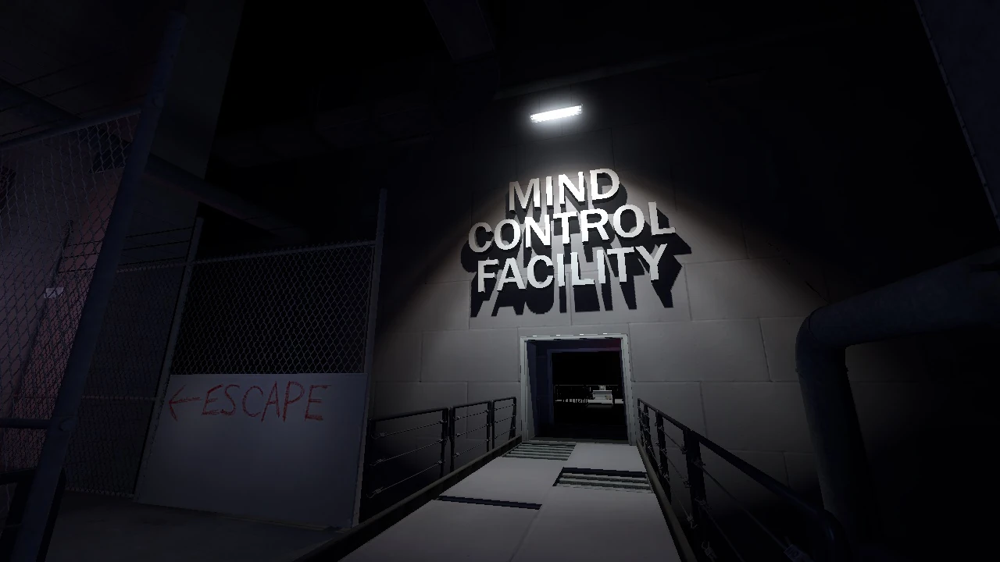
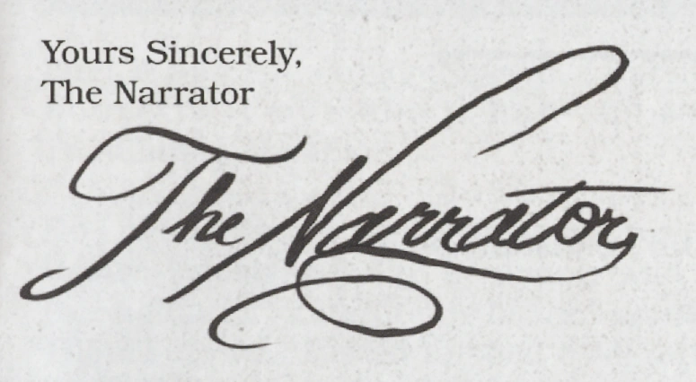
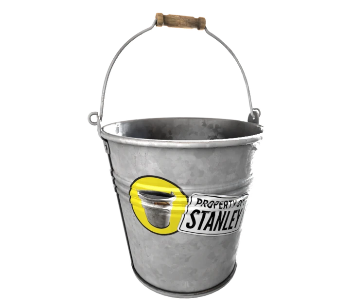
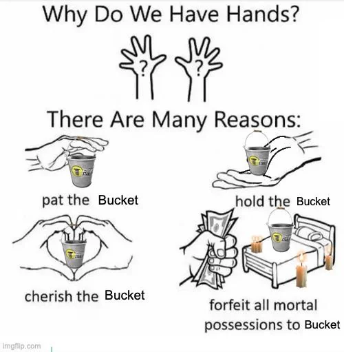

Galactic Cafe - Wikimedia Commons - CC
Get it on Steam! Support their website!Release Dates of Games/Game versions:
The Stanley Parable is a story-driven game where you play as Stanley, an office worker who finds himself alone in an empty building.
You can either follow the narrator’s instructions or ignore them. There’s no combat; it’s all about exploring different paths and seeing how your decisions lead to various endings, each poking fun at player freedom and the forth wall.
Originally a Half-Life 2 mod in 2011, it became a full game in 2013 and is beloved for its unique humor and clever worldbuilding.
Stated by the game's website itself:
"You will follow a story, you will not follow a story. You will have a choice, you will have no choice. The game will end, the game will never end. Contradiction follows contradiction, the rules of how games should work are broken, then broken again. This world was not made for you to understand."

Polyblank_PNG "Zack" - Pinterest
The game starts in Stanley’s cubicle and branches out into various locations like hallways, storage rooms, elevators, and strange, surreal areas.

Evan Rosser - The Horizon - 2013
TheD3xus - Fandom
The Narrator is voiced by Kevin Brighting
Narrator Voicelinesderriksjones. (2014, January 1). All Stanley Parable Narrator Clips - Original Audio from The Stanley Parable. YouTube. https://www.youtube.com/watch?v=b5mMnhISu-Q
General Projects - Fandom
Once you complete most of the main game, you are able to unlock the best and most reliable character in the world; the bucket. :'D
The bucket is incredible, it may be the wisest and coolest of all of them. The bucket will live on. We love the bucket.
With everything, here is why you should play:
9/10
Content is available under CC-BY-SA
stanleyparable.com/permission/the end is never the end is never the end is never the end is never the end is never the end is never the end is never the end is never the end is never the end is never the end is never the end